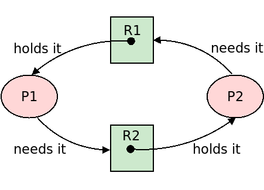
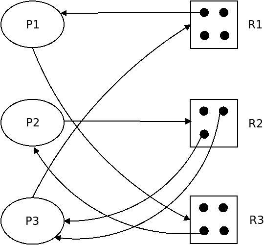

class: center, middle, title-slide ## CSCI 340 Operating Systems <br> ## Chapter 8: Deadlock .author[ Stewart Weiss<br> ] .license[ Copyright 2020 Stewart Weiss. Unless noted otherwise all content is released under a [Creative Commons Attribution-ShareAlike 4.0 International License](https://creativecommons.org/licenses/by-sa/4.0/). ] --- name: cc-notice template: default layout: true .bottom-left[© Stewart Weiss. CC-BY-SA.] --- name: tinted-slide template: cc-notice layout: true class: tinted --- name:toc ### Table of Contents [Prerequisite Reading](#prereqs)<br> [About This Chapter](#about-chapter)<br> [Chapter Objectives](#objectives)<br> [An Example of Deadlock](#deadlock-examples)<br> [Deadlock Visualized](#deadlock-visualized)<br> [Description of the Model](#system-model-intro)<br> [Modeling How Processes Use Resources](#resource-use)<br> [Reusable Resource Graphs (RR-Graphs)](#rr-graph-1)<br> [Examples of RR-Graphs](#rr-graph-2)<br> [Examples of RR-Graphs](#rr-graph-example)<br> [Deadlock State](#deadlock-state)<br> [Characterizing Deadlock: Four Necessary Conditions](#deadlock-characterization)<br> [About Circular Waiting](#circular-waiting)<br> [Circular Waiting and Cycles](#deadlock-def)<br> [Cycles Do Not Imply Deadlock](#cycles-not-sufficient)<br> [A Theorem About Cycles](#rr-graph-cycles)<br> [Another Theorem About Cycles](#rr-graph-cycles-2)<br> [Using RR-Graphs](#rr-graph-reasoning)<br> [Example Leading to Deadlock](#rr-graph-example-2)<br> [Other Types of Waiting](#other-events)<br> [Dealing With Deadlock](#deadlock-handling)<br> --- ### Table of Contents [Prevention](#prevention)<br> [Prevention: Removing Mutual Exclusion](#prevention-mutex)<br> [Prevention: Removing Hold-and-Wait](#prevention-hold-wait)<br> [Prevention: Removing Non-Preemption](#prevention-non-preempt)<br> [Prevention: Removing Non-Preemption](#prevention-non-preempt-2)<br> [Prevention: Removing Circular Waiting](#prevention-no-circ-wait)<br> [Example of Ordered Requests](#prevention-example-1)<br> [Avoidance Algorithms](#avoidance-1)<br> [Avoidance Algorithms Using Maximum Claims](#claim-graphs)<br> [Using Maximum Claims](#avoidance-max-claims)<br> [The Banker's Algorithm](#bankers-algorithm)<br> [References](#references)<br> <!--TOC_END--> --- name: prereqs ### Prerequisite Reading Before reading these slides, you should be familiar with - Processes and concurrency ([Chapter 3](chapter03.html)) - Threads and the POSIX Threads API ([Chapter 4](chapter04.html)) - Process synchronization tools and primitives ([Chapter 6](chapter06.html)) --- name: about-chapter ### About This Chapter Chapter 6 introduced deadlock in an informal way and gave an example of it, and in Chapter 7, a solution to the Dining Philosophers Problem was shown to cause deadlock. This chapter examines deadlock in greater depth, presenting .greenbold[formal models of systems of processes] that make it possible to reason about deadlock and prove theorems about it. In particular, it explores the most important issues related to deadlock, which are: .lightbluebox[ - Deadlock Characterization - Deadlock Prevention and avoidance - Deadlock Detection - Recovery from Deadlock ] As we did in Chapters 6 and 7, we use the terms "process" and "thread" interchangeably, --- name: objectives ### Chapter Objectives Having read and understood the content of this chapter, you should be able to - provide concrete examples of how deadlock can occur when mutex locks are used for synchronizing access to shared resources; - state the .greenbold[four conditions] that must exist for deadlock to occur; - explain what a .greenbold[resource allocation graph] is and determine whether or not deadlock is present in a system modeled by one; - describe and compare the four strategies for handling the possibility of deadlock; - apply the .greenbold[Banker's Algorithm] to a system of processes; - apply the deadlock detection algorithm to a system of processes; - compare different methods of recovering from deadlock. --- name: deadlock-examples ### An Example of Deadlock Suppose that each of two processes, .fixedblue[P1] and .fixedblue[P2], needs to modify a file on disk and one on a USB drive. The disk file is named .fixedblue[R1] and the one on the USB drive is named .fixedblue[R2]. (Each file is a .greenbold[resource] and our convention henceforth is to name resources using uppercase .fixedblue[R].) Files can only be modified by one process at a time and a process can only acquire files one at a time, but each needs to have both files open to perform its updates. -- Therefore, each process must acquire both files, one after the other, perform its update, and then release the two files. Suppose their code is something like the following. .left-column[.left[ ```C P1: request(R1); `request(R2);` perform update; release(R2); release(R1); ``` ]] .right-column[.left[ ```C P2: request(R2); `request(R1);` perform update; release(R1); release(R2); ``` ]] -- .below-column[ If they are each granted their first request, i.e., .fixedblue[P1] gets .fixedblue[R1] and .fixedblue[P2] gets .fixedblue[R2], before either requests the second file (in the highlighted lines above), then each process will be holding a file the other needs and will be in a .redbold[blocked] state, waiting for the file held by the other. This is an example of .bluebold[deadlock]. ] --- name: deadlock-visualized ### Deadlock Visualized Deadlock can be visualized with a type of .greenbold[directed graph] called a .bluebold[reusable resource graph] (.bluebold[RR-graph]). We illustrate it informally using the preceding example and formalize it later. - We represent each process by a node drawn as an .greenbold[ellipse]. - We represent each resource by a .greenbold[rectangular node] with a "dot" inside to represent the actual file. - We represent the fact that a process .redbold[is holding] (has acquired and not released) a resource with a .redbold[directed edge from the dot inside the resource node to the process]. This is called an .bluebold[assignment edge]. - We represent the fact that a process .redbold[is waiting for] (has requested but not acquired) a resource with a .redbold[directed edge from the process to the entire resource node]. This is called a .bluebold[request edge]. Using these rules, the deadlocked state of the system from the preceding example is depicted in the next slide. --- name: deadlock-visualized-2 count: false ### Deadlock Visualized .center[  ] In the figure, the edge from .fixedblue[R1] to .fixedblue[P1] is drawn from the small dot representing the single file, but the edge from .fixedblue[P2] to .fixedblue[R1] is drawn just to the rectangle itself, for reasons to be explained later. Notice that this graph has a .redbold[cycle]. This is not a coincidence. --- name: deadlock-characterization layout: false class: center, middle, inverse ## A System Model We describe an abstract model of a collection of processes and resources that they share that will allow us to reason about deadlock. --- template: tinted-slide layout: true --- name: system-model-intro ### Description of the Model A .bluebold[resource allocation system] is a collection consisting of processes and resources. The resources in this system .greenbold[can only be held by one process at a time].super[1]. (There are resources, such as read-only files, that can be shared; these are excluded.) .footnote[ 1 Technically, these notes describe a .bluebold[serially reusable resource allocation system]. ] We define it as follows: -- - There is a fixed, finite number .fixedblue[N] of processes represented by the symbols .fixedblue[P.sub[1]], .fixedblue[P.sub[2]], ...,.fixedblue[P.sub[N]]. The process set is static - no processes are created or destroyed. -- - There is a finite number .fixedblue[t] of .greenbold[resources types] represented by the symbols .fixedblue[R.sub[1]], .fixedblue[R.sub[2]], ...,.fixedblue[R.sub[t]]. - Resource types are things such as memory units, disk blocks, network interfaces, files, and mutex locks. -- - Each resource type consists of a fixed number of .greenbold[identical, interchangeable units]. The number of units of type .fixedblue[R.sub[k]] is denoted .fixedblue[W.sub[k]]. For example: - If primary memory is resource type .fixedblue[ R.sub[2]] and it consists of 4,194,304 4096-byte blocks, then .fixedblue[W.sub[2]]=4,194,304. - If a tertiary storage system used for backup consists of 16 identical tape drives and the tape drive type is .fixedblue[ R.sub[5]], then .fixedblue[W.sub[5]]=16. --- name: resource-use ### Modeling How Processes Use Resources In this model, for a process .fixedblue[P.sub[i]] to use a resource .fixedblue[R.sub[j]], it must perform 3 actions in sequence: -- 1. It .redbold[requests] a number of units of the resource less than .fixedblue[W.sub[j]], and if they are not available, it .redbold[blocks] itself to wait for them. Because units are identical and interchangeable, a request is not for specific units; any of the available ones will satisfy the request. -- 2. When all units are available, it .redbold[acquires and uses] the resource. The units that it acquires are specific units. -- 3. It .redbold[releases] all units of the resource that it holds. (Implicitly it has done all of the work that it needed to do with these resources.) -- Usually steps 1 and 3 above are .greenbold[system calls], in which case the operating system must verify and service these calls. -- Although we are primarily interested in the request and release of resources managed by the kernel, programmers in general must be concerned about the request and release of non-kernel managed resources as well: - Deadlock can occur within multi-threaded applications, and steps 1 and 3 may not be system calls in that case. For example, an application might use the Pthreads library and the resources might be mutex locks provided by the library. The acquisition and release of these locks are not system calls. --- name: rr-graph-1 ### Reusable Resource Graphs (RR-Graphs) A .bluebold[reusable resource graph] (.bluebold[RR-graph] for short) represents the state of a resource allocation system .redbold[at a given moment in time]. It is a directed graph whose vertices are partitioned into two types of nodes: .bluebold[resource nodes] and .bluebold[process nodes]. -- - There is a resource node for each resource type in the system. Each resource node contains a dot for each unit of the resource type. Resource nodes are drawn as .greenbold[rectangles]. -- - There is a process node for each process in the system. Process nodes are drawn as .greenbold[ellipses]. -- - If a process is .redbold[holding] (has acquired and not released) a unit of a resource, there is a .redbold[directed edge from the unit of the resource to the process]. This is called an .bluebold[assignment edge]. Note that processes hold specific units and the edges start at the unit and are directed to the process node. - If a process is .redbold[waiting for] (has requested but not acquired) a unit of a resource, there is a .redbold[directed edge from the process to the resource node]. This is called a .bluebold[request edge]. Because a request is not for specific units, a request edge is directed at the entire resource node. There is a request edge for each unit requested. --- name: rr-graph-2 ### Examples of RR-Graphs .redbold[Example]. The node for a resource with four units is drawn like this: .center[ ] -- A system in which, at a given moment, process .fixedblue[P1] requests two of these units would be drawn like this: .center[ ] -- A system in which, at a given moment, process .fixedblue[P1] holds two of these units would be drawn like this: .center[ ] --- name: rr-graph-example ### Examples of RR-Graphs The following figure represents an RR-graph for a 3-process, 3-resource system in which no activity has taken place yet. .abs-up10[ .center[ <img src="figures/rr-graph00.png" width=60% alt="initial rr-graph"/> ] ] --- name: rr-graph-example-2 count: false ### Examples of RR-Graphs .fixedblue[P1] requests a unit of .fixedblue[R1]: .abs-up10[ .center[ ] ] --- name: rr-graph-example-3 count: false ### Examples of RR-Graphs .fixedblue[P1] acquires a unit of .fixedblue[R1]: .abs-up10[ .center[ ] ] --- name: rr-graph-example-4 count: false ### Examples of RR-Graphs The graph below represent a few actions that took place. .fixedblue[P3] requested and acquired 2 units of .fixedblue[R3] and .fixedblue[P2] requested and acquired 1 unit of .fixedblue[R2]. .abs-up10[ .center[ ] ] --- name: rr-graph-example-5 count: false ### Examples of RR-Graphs The graph below represent two actions that took place. .fixedblue[P3] requested 1 unit of .fixedblue[R1] and .fixedblue[P1] requested 1 unit of .fixedblue[R3]. Notice that there is no cycle in this graph. .abs-up10[ .center[ ] ] --- name: rr-graph-example-6 count: false ### Examples of RR-Graphs Now .fixedblue[P2] requests 1 unit of .fixedblue[R2]. Notice that there is now a cycle in this graph. Where? .abs-up10[ .center[  ] ] -- .abs-up7[ We will re-examine this graph a bit later. It is time to formalize deadlock. ] --- name: deadlock-state ### Deadlock State .lightgreenbox[ A set of processes is in a .bluebold[deadlock state] when every process in the set is .greenbold[waiting for an event that can be caused only by another process in the set]. ] .redbold[Example]. A system has three tape drives. Three processes each need two tape drives for reading input data. 1. Each process requests and acquires its first tape drive. (All three drives are now held.) 2. Now each process requests its second tape drive. (No tape drives are available, so each process blocks.) 3. Each process is now waiting for an event, the release of a tape drive, that can only be caused by one of the other two processes. They are now in a .bluebold[deadlock] state. --- name: deadlock-characterization ### Characterizing Deadlock: Four Necessary Conditions Deadlock can arise in a resource allocation system only if all four of the following conditions are true of that system simultaneously. 1. .redbold[Mutual Exclusion]. At least one resource must be held in a non-shareable mode. - This means that only one process can hold the resource at a time. If another process requests it, it will be blocked until the resource is released. 2. .redbold[Hold-and-Wait]. There exists at least one process that is holding a resource and waiting to acquire another resource which is held by some other process. 3. .redbold[Non-Preemption]. No resources can be taken away from any process. Put another way, a resource can only be released voluntarily by the process that holds it when that process has finished using it. 4. .redbold[Circular Waiting]. There exists a set of processes, .fixedblue[P.sub[0]], .fixedblue[P.sub[1]], .fixedblue[P.sub[2]],...,.fixedblue[P.sub[n]] such that for each k, for 0 ≤ k < n, .fixedblue[P.sub[k]] is waiting for a resource held by .fixedblue[P.sub[k+1]], and .fixedblue[P.sub[n]] is waiting for a resource held by .fixedblue[P.sub[0]]. This last condition can only be true if .redbold[Hold-and-Wait] is also true, but not conversely. --- name: circular-waiting ### About Circular Waiting The definition of deadlock implies that circular waiting must be true, which implies that there must be a cycle in the resource allocation graph that represents the deadlock state. We illustrate this with an example. Suppose a set of five processes is in a deadlock state. This means that each process is waiting for an event that can only be caused by another of the five processes. This implies that each process is waiting for a resource that can only be released by one of the others. For simplicity, assume that the event for which each process waits is the release of a resource .fixedblue[R] held by another process. Instead of drawing the two edges representing one waiting for the resource held by the other in the way we did before: for simplicity we omit the resource from the graph, and combine two edges into one: --- name: deadlock-def template: tinted-slide layout: true ### Circular Waiting and Cycles --- name: deadlock-forming1 template: deadlock-def Beging by picking any one of those processes, call it .fixedblue[P1]. Let .fixedblue[P2] be the process it waits for. Then there is an edge from .fixedblue[P1] to .fixedblue[P2]: .abs-up16[.left[ ]] --- name: deadlock-forming2 template: deadlock-def We name the process that .fixedblue[P2] waits for, .fixedblue[P3] and draw an edge from .fixedblue[P2] to .fixedblue[P3]:<br> .abs-up16[ .left[ ]] --- name: deadlock-forming3 template: deadlock-def Next, we name the process that .fixedblue[P3] waits for, .fixedblue[P4] and draw an edge from .fixedblue[P3] to .fixedblue[P4]: .abs-up16[ .left[ ]] --- name: deadlock-forming4 template: deadlock-def We name the process that .fixedblue[P4] waits for, .fixedblue[P5] and draw an edge from .fixedblue[P4] to .fixedblue[P5]: .abs-up16[ .left[ ]] --- name: deadlock-forming5 template: deadlock-def Because all five processes are involved in this deadlock, .fixedblue[P5] must be waiting for one of .fixedblue[P1],.fixedblue[P2],.fixedblue[P3], or .fixedblue[P4]. While it is possible that it could be waiting for any of them, no matter which it waits for, there is a cycle in this graph. To illustrate we arbitrarily assume it is waiting for .fixedblue[P2], which holds the resource it needs, and draw an edge from .fixedblue[P5] to .fixedblue[P2]: .abs-up16[ .left[ ]] -- .abs-up3[ .left[ Notice that this graph has a .bluebold[cycle], a sequence of nodes and edges such that starting in any node and following the edges, we get back to that same node. The graphs that represent deadlock states in our model will always have cycles. The cycle in this case does not include all of the deadlocked processes. .redbold[Does the presence of a cycle in an RR-graph imply that it represents a deadlock state?] ]] --- template: tinted-slide layout: true --- name: cycles-not-sufficient ### Cycles Do Not Imply Deadlock Consider the RR-graph from the earlier example: .center[ ] In this graph, .fixedblue[P2] is free to acquire a unit of .fixedblue[R2], since .fixedblue[P3] holds only two of them. Similarly, .fixedblue[P1] can acquire a unit of .fixedblue[R3], since three are available. Then all processes hold the resources they need, none are waiting, and so all release their units eventually, leading to a graph with no edges in it. -- Therefore, this graph does not represent a deadlock state. --- name: rr-graph-cycles ### A Theorem About Cycles We can now state the following theorem: .lightgreenbox[ .bluebold[Theorem]. A cycle in a reusable resource graph is a necessary but not sufficient condition for it to represent a deadlock. In other words, if it is a deadlock state, it must have a cycle, but having a cycle does not imply that it is a deadlock state. ] -- The preceding RR-graph provided the "witness" to the claim that graphs with cycles are not necessarily deadlock states. The reason that the preceding RR-graph did not represent a deadlock state was that .fixedblue[P2] was free to acquire a unit of .fixedblue[R2] because .fixedblue[R2] had multiple units. --- name: rr-graph-cycles-2 ### Another Theorem About Cycles If every resource node contains just a single unit, then an outgoing edge implies that the resource is in use. If there is also an incoming edge, that resource is also requested. The process that requested it is blocked. .left-column[ The graph to the right illustrates this. If there is a cycle, every process in that cycle must be blocked. In this graph both .fixedblue[P1] and .fixedblue[P2] are in the cycle and both are blocked. Neither will ever run again. This leads to the following: ] .right-column[ ] -- .below-column[ .lightgreenbox[ .bluebold[Theorem]. A cycle in a reusable resource graph is a necessary and sufficient condition for it to represent a deadlock if every resource has just a single unit. ] ] --- name: rr-graph-reasoning ### Using RR-Graphs One reason to use RR-graphs is that they make things visual and therefore help us to understand deadlock in a more intuitive way. For example, when a process .fixedblue[P] requests a resource .fixedbelue[R], we create a request edge .fixedblue[P]→.fixedblue[R]. When the resource is granted to the process, the request edge is removed and immediately replaced by an assignment edge .fixedblue[P]←.fixedblue[R]. -- We can determine when a system enters a deadlock state by simulating the actions using this graph, as we illustrate next. --- name: rr-graph-example-2 ### Example Leading to Deadlock The initial state: .abs-up10[ .center[ ] ] --- name: rr-graph-example-2a count: false ### Examples of RR-Graphs .fixedblue[P1] requests requests and acquires 1 unit of .fixedblue[R1]: .abs-up10[ .center[ ] ] .abs-up7[ No deadlock here. ] --- name: rr-graph-example-2b count: false ### Examples of RR-Graphs .fixedblue[P3] requests and acquires 2 units of .fixedblue[R2]: .abs-up10[ .center[ ] ] .abs-up7[ Still no deadlock here. ] --- name: rr-graph-example-2c count: false ### Examples of RR-Graphs .fixedblue[P2] requests and acquires 2 units of .fixedblue[R3]: .abs-up10[ .center[ ] ] .abs-up7[ Still no deadlock here. ] --- name: rr-graph-example-2d count: false ### Examples of RR-Graphs .fixedblue[P2] requests 2 units of .fixedblue[R2], which are unavailable, so it blocks. Instead of drawing multiple request edges, we draw a single edge labeled by how many units are requested. .abs-up10[ .center[ ] ] .abs-up7[ Still no deadlock here. ] --- name: rr-graph-example-2e count: false ### Examples of RR-Graphs .fixedblue[P1] requests 3 units of .fixedblue[R3], which are unavailable, so it blocks. .abs-up10[ .center[ <img src="figures/rr-graph15.png" width=60% alt="step 1rr-graph"/> ] ] .abs-up7[ Still no deadlock here. ] --- name: rr-graph-example-2f count: false ### Examples of RR-Graphs .fixedblue[P3] requests 3 units of .fixedblue[R1], which are unavailable, so it blocks. .abs-up10[ .center[ ] ] -- .abs-up7[ All processes are blocked waiting for resources held by the others, so this is a deadlock state. ] --- name: other-events ### Other Types of Waiting With respect to the model we just described, the .bluebold[event] for which a process waits is the release of a resource by the process that holds it. Events can be other things such as the arrival of a message through a channel. - One process can be waiting for a message that another process must send, and the second process is waiting for the first's message: .left-column[.left[ ```C P1: receive(P2,m); send(P2,m1); ``` ]] .right-column[.left[ ```C P2: receive(P1,m); send(P1,m2); ``` ]] .below-column[ This is also deadlock. Messages can be treated as resources also. ] --- name: deadlock-handling ### Dealing With Deadlock There are three general ways in which to deal with deadlock: - .redbold[Prevention/Avoidance]. Some people distinguish between prevention and avoidance. The distinction is a subtle one. - Prevention is the act of making sure that one or more of the necessary conditions cannot exist, ever. It enforces control over how a process can request resources. - Avoidance methods are dynamic algorithms that are applied when the system has to decide whether to grant requests for resources to prevent a deadlock state from being reached. Avoidance algorithms generally control allocation as opposed to limiting requests. Both prevent deadlock from occurring. - .redbold[Detection]. Detection is required when no attempt is made to prevent or avoid deadlock. In systems using detection the system periodically runs algorithms to detect whether deadlock exists. - .redbold[Recovery]. If the system discovers that deadlock has occurred, this refers to the means by which it removes that deadlock. --- name: prevention ### Prevention Prevention must remove one of the necessary conditions. Recall that these are 1. .bluebold[Mutual Exclusion] 2. .bluebold[Hold-and-Wait] 3. .bluebold[Non-Preemption] 4. .bluebold[Circular Waiting] --- name: prevention-mutex ### Prevention: Removing Mutual Exclusion Mutually exclusive acquisition of resources cannot be removed for the types of resources that we study here - reusable, non-shareable resources. By definition they are held in mutual exclusion. Removing mutual exclusion would mean processes could simultaneously send files to a printer, or write to the same disk block, etc. .center[ ] --- name: prevention-hold-wait ### Prevention: Removing Hold-and-Wait Removing Hold-and-Wait implies every process must acquire all resources it needs all at once. This results in .left-column[ - .redbold[poor resource utilization], since processes would hold resources they do not use for a long time, and - potential .redbold[starvation] of processes that never get the resources they need. - To the right, .fixedblue[P.sub[1]] grabbed all resources and now no other process has any! ] .right-column[ ] --- name: prevention-non-preempt ### Prevention: Removing Non-Preemption Removing non-preemption means .greenbold[allowing preemption]. That means being able to forcibly take resources away from a process. One protocol to do this is: - If a process that is holding resources requests a resource that cannot be allocated immediately to it, then all of its currently held resources are released. - The preempted resources are added to the list of resources for which the process is waiting and the process is blocked. - The process is released to run only when it can acquire its old resources together with the ones that it requested after. -- An alternative protocol is: - When a process requests a resource, if it is available it is granted. If not and it is held by a blocked process, the kernel preempts the resource from that blocked process and gives it to the requesting process. - If it is unavailable and not held by a blocked process, the requesting process is blocked. If another process requests any of the resources it holds, they are taken away from it. The blocked process is not restarted until it has all resources it needs, including any taken away and the ones it requested but was not granted. --- name: prevention-non-preempt-2 ### Prevention: Removing Non-Preemption These protocols can be used only for resources whose state can be saved and restored, such as hardware in general. It is not usually applied to soft resources such as locks, semaphores, etc. --- name: prevention-no-circ-wait ### Prevention: Removing Circular Waiting In 1968, J. W. Havender proposed a method of deadlock prevention for the IBM )S/360 operating system by removing the circular waiting condition. (In fact he called it a deadlock _avoidance_ method.) Resource types are put into an ordering relation $R_1 < R_2 < \cdots < R_k$.super[1] <!-- --> and processes adhere to a set of rules for making requests for resources. .footnote[ 1 We describe this ordering in reverse to be consistent with the textbook's description. ] Specifically, a process can request resources only in increasing order of its resource type: - If a process holds $R_i$ it can only request $R_j$ if $i < j$. <!-- --> - To request $R_j$, it must first release all $R_k$ such that $j \le k$; i.e., it cannot request a resource of a lower number than any it currently holds, so it must first release all resources of a higher number in the order. - If a process violates these rules, it is terminated. This makes circular waiting impossible, but it still means that sometimes resources are held that are not needed until later, resulting in reduced resource utilization. --- name: prevention-example-1 ### Example of Ordered Requests A system has three resource types: - .fixedblue[R1] has 3 units (files) - .fixedblue[R2] has 2 units (memory blocks) - .fixedblue[R3] has 1 unit (I/O device) There are four processes, which make a sequence of requests adhering to the Havender rules. Initially there are no requests. .left-column[ ] .right-column[ ] --- name: prevention-example-2 count: false ### Example of Ordered Requests A system has three resource types: - .fixedblue[R1] has 3 units (files) - .fixedblue[R2] has 2 units (memory blocks) - .fixedblue[R3] has 1 unit (I/O device) There are four processes, which make a sequence of requests adhering to the Havender rules. Initially there are no requests. .left-column[ 1. .fixedblue[P1] requests and acquires 1 unit each of .fixedblue[R1], then .fixedblue[R2], then .fixedblue[R3]. ] .right-column[ ] --- name: prevention-example-3 count: false ### Example of Ordered Requests A system has three resource types: - .fixedblue[R1] has 3 units (files) - .fixedblue[R2] has 2 units (memory blocks) - .fixedblue[R3] has 1 unit (I/O device) There are four processes, which make a sequence of requests adhering to the Havender rules. Initially there are no requests. .left-column[ 1. .fixedblue[P1] requests and acquires 1 unit each of .fixedblue[R1], then .fixedblue[R2], then .fixedblue[R3]. 2. .fixedblue[P3] requests and acquires 1 unit of .fixedblue[R1]. ] .right-column[ ] --- name: prevention-example-3 count: false ### Example of Ordered Requests A system has three resource types: - .fixedblue[R1] has 3 units (files) - .fixedblue[R2] has 2 units (memory blocks) - .fixedblue[R3] has 1 unit (I/O device) There are four processes, which make a sequence of requests adhering to the Havender rules. Initially there are no requests. .left-column[ 1. .fixedblue[P1] requests and acquires 1 unit each of .fixedblue[R1], then .fixedblue[R2], then .fixedblue[R3]. 2. .fixedblue[P3] requests and acquires 1 unit of .fixedblue[R1]. 3. .fixedblue[P4] requests and acquires 1 unit of .fixedblue[R1] and 1 unit of .fixedblue[R2]. It then requests 1 unit of .fixedblue[R3] but it is now blocked. ] .right-column[ ] --- name: prevention-example-4 count: false ### Example of Ordered Requests A system has three resource types: - .fixedblue[R1] has 3 units (files) - .fixedblue[R2] has 2 units (memory blocks) - .fixedblue[R3] has 1 unit (I/O device) There are four processes, which make a sequence of requests adhering to the Havender rules. Initially there are no requests. .left-column[ 1. .fixedblue[P1] requests and acquires 1 unit each of .fixedblue[R1], then .fixedblue[R2], then .fixedblue[R3]. 2. .fixedblue[P3] requests and acquires 1 unit of .fixedblue[R1]. 3. .fixedblue[P4] requests and acquires 1 unit of .fixedblue[R1] and 1 unit of .fixedblue[R2]. It then requests 1 unit of .fixedblue[R3] but it is now blocked. 4. .fixedblue[P2] requests 1 unit of .fixedblue[R1] and is blocked (all 3 are held). ] .right-column[ ] --- name: prevention-example-5 count: false ### Example of Ordered Requests A system has three resource types: - .fixedblue[R1] has 3 units (files) - .fixedblue[R2] has 2 units (memory blocks) - .fixedblue[R3] has 1 unit (I/O device) There are four processes, which make a sequence of requests adhering to the Havender rules. Initially there are no requests. .left-column[ 1. .fixedblue[P1] requests and acquires 1 unit each of .fixedblue[R1], then .fixedblue[R2], then .fixedblue[R3]. 2. .fixedblue[P3] requests and acquires 1 unit of .fixedblue[R1]. 3. .fixedblue[P4] requests and acquires 1 unit of .fixedblue[R1] and 1 unit of .fixedblue[R2]. It then requests 1 unit of .fixedblue[R3] but it is now blocked. 4. .fixedblue[P2] requests 1 unit of .fixedblue[R1] and is blocked (all 3 are held). 5. .fixedblue[P3] requests 1 unit of .fixedblue[R2] and is blocked. ] .right-column[ ] --- name: avoidance-1 ### Avoidance Algorithms Up until now we did not consider the possibility of not granting a request for a resource if there were units available. We assumed that when a process made a request, if the resource were available it was granted immediately. The resulting states are called .bluebold[expedient states]. In an expedient state, any process with an outstanding request is in a blocked state. -- One way to prevent deadlock is to use _a priori_ additional information to allow the system to decide when and whether to grant requests instead of granting them automatically. This is called .bluebold[deadlock avoidance]. --- name: claim-graphs ### Avoidance Algorithms Using Maximum Claims One piece of information that makes deadlock avoidance possible is the maximum claim for each process for each resource type. If this is known in advance, deadlock is avoidable. The .bluebold[maximum claim] of a single process is the largest number of units of each resource that it will need at a single time. Each process must declare its needs in advance. -- The maximum claims of all processes can be represented by a two-dimensional matrix such as the following, for a system with five processes and three resource types. .centered_40[ .center[Maximum Claim Table] | Process | R1 | R2 | R3 | |:---|:---:|:---:|:---:| | P1 | 7 | 5 | 3 | | P2 | 3 | 6 | 3 | | P3 | 9 | 0 | 2 | | P4 | 2 | 3 | 2 | | P5 | 4 | 3 | 1 | ] The table shows that process .fixedblue[P3] will never need any units of .fixedblue[R2] and will never need more than 2 units of .fixedblue[R3] at any given time. --- name: avoidance-max-claims ### Using Maximum Claims A deadlock avoidance algorithm that relies on maximum claim information dynamically examines the resource allocation state to ensure that there can never be a circular wait condition no matter what happens. The resource allocation state is the set of all available and allocated resources, including which processes are assigned them, such as the rr-graph conveys, augmented with the maximum demands of the processes as provided by the maximum claim table. --- name: bankers-algorithm ### The Banker's Algorithm A request is granted only if the resulting system state is a safe state, meaning that there is a way to avoid deadlock in this state while still continuing to allocate resources to each process. --- name: references ### References 1. J. W. Havender, “Avoiding Deadlock in Multitasking Systems”, IBM Systems Journal, Volume 7, Number 2 (1968), pages 74-84. 2. Richard C. Holt, "Some Deadlock Properties of Computer Systems", ACM Computing Surveys, Volume 4, Number 3 (1972), pages 179-196. 3. Abraham Silberschatz, Greg Gagne, Peter B. Galvin. __Operating System Concepts__, 10th Edition. Wiley Global Education, 2018.